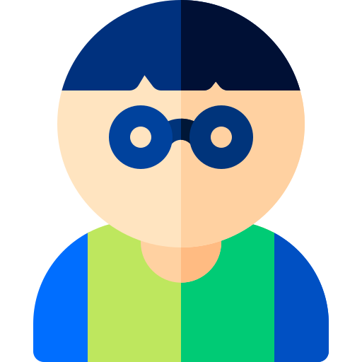
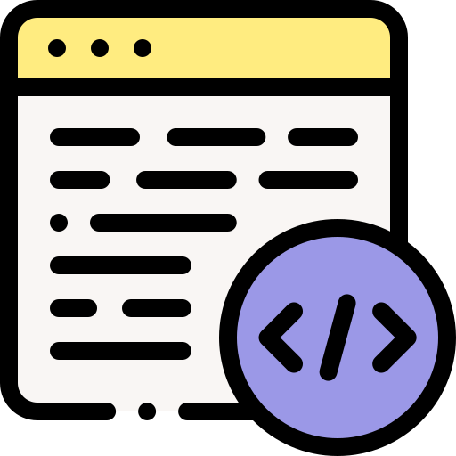

Cześć.
Jestem początkującym web developerem.
Uczę się technikum SCI w Szczecinie. Uwielbiam gry planszowe, karciane. Od roku regularnie prowadzę sesje D&D dla znajomych.
Umiejętności.

Web development
Zacząłem pisać strony internetowe w wieku 13 lat. Od tego czasu jest to moje hobby.

Język Python
W wieku lat 14 spotkałem się z pythonem. Na informatyce pisaliśmy proste skrypty używając biblioteki Turtle. Posiadam certyfikat PCAP Intermediate:

Gitara Elektyczna
Od prawie 2 lat gram na gitarzę elektrycznej. Jest to coś, co pomaga mi zebrać myśli i pobudza moją kreatywność.